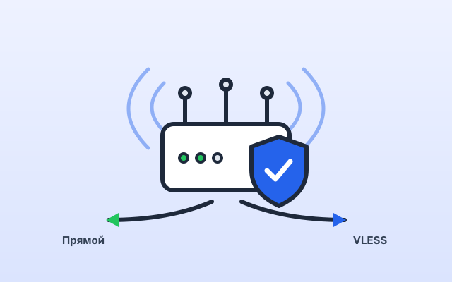
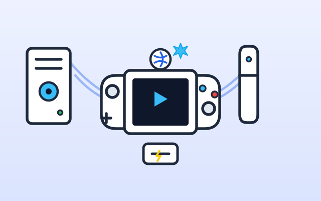
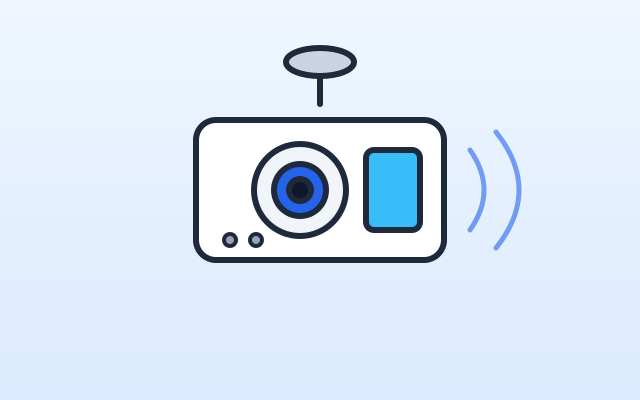
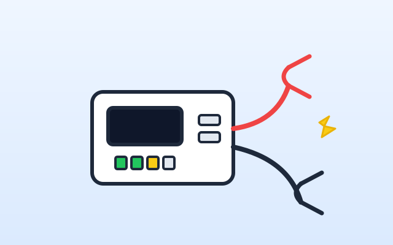
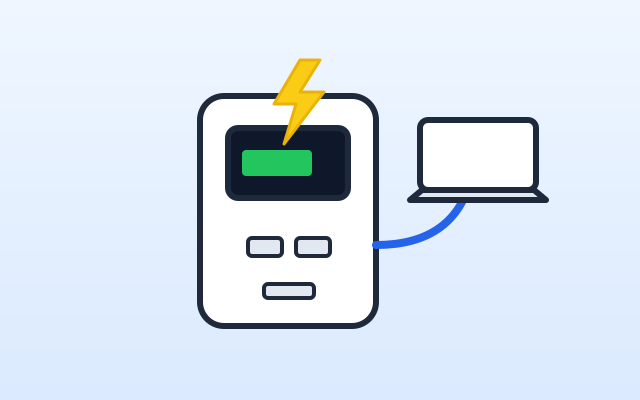
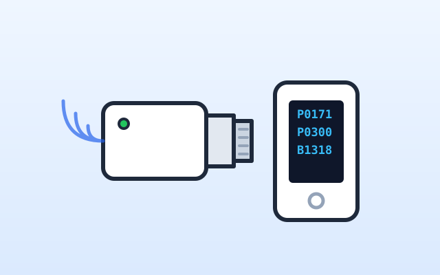
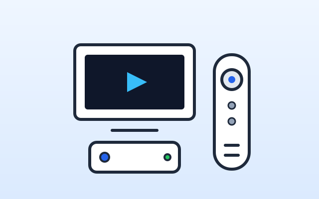
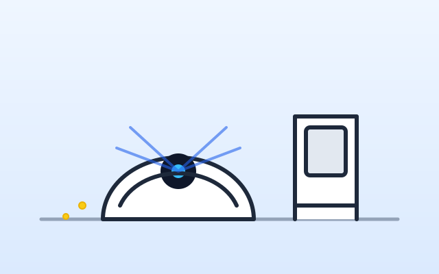
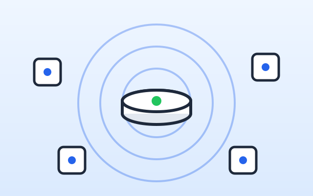

Разбираем технику честно и по делу
Сравнения, тесты и практические гайды: от портативных консолей и домашних сетей до автогаджетов и умного дома.

Steam Deck OLED против Nintendo Switch 2 и Switch OLED: битва портативок в 2026 году
Трёхстороннее сравнение: чип Tegra T239 и аппаратный DLSS в Switch 2, открытый ПК Steam Deck OLED с 90 Гц HDR и роль Switch OLED — спецификации, сценарии и риски модификации.
Свежие гайды
Практика и настройка
Домашний VPN и антиблокировка на роутере: VLESS, Amnezia и раздельное туннелирование
Почему классические протоколы больше не работают, какое железо тянет шифрование и как оставить банки и Госуслуги на прямом канале.

Идеальный сетап на одном кабеле: как подключить ноутбук через Type-C док-станцию
DP Alt Mode, Power Delivery 100 Вт и USB 3.2 — что должно сойтись, чтобы монитор, сеть и периферия заработали от одного провода.

Смартфон как ультимативная консоль в 2026: локальный стриминг с ПК/PS5, Winlator и ретрогейминг
Sunshine + Moonlight и Chiaki-ng по домашней сети, автономные Windows-игры на Android, эмуляция классики и правильный обвес: геймпад с Type-C, кулер Пельтье, питание.
Все обзоры и подборки
Рейтинги 2026
Битва поколений 2026: переплачивать за новые флагманы или брать хиты прошлых лет со скидкой
13 пар «новинка — предшественник»: Xiaomi 17 vs 15, iPhone 17 vs 16 Pro, Galaxy S26 vs S25, Pixel 10 vs 9 и другие. Что реально изменилось, плюсы и минусы обоих поколений и чёткий вердикт.

Топ-5 лучших смартфонов до 30 000 рублей в 2026 году: гид покупателя без компромиссов
120 Гц AMOLED, OIS, батарея от 5000 мА·ч и быстрая зарядка в комплекте — пять моделей сегмента с плюсами, минусами и номинациями плюс чек-лист покупателя.

Топ-7 видеорегистраторов 2026 года с радар-детектором и ночной съёмкой 4K
Сравнили флагманские комбо-устройства по качеству сенсоров, надёжности GPS-баз и устойчивости к морозам.

Топ-5 лучших пусковых устройств (бустеров) 2026 года
Рейтинг надёжных джамп-стартеров для запуска бензиновых и дизельных двигателей в мороз: тесты тока, ёмкость и безопасность.

Лучшие пауэрбанки высокой мощности (от 65W до 140W) для ноутбуков и смартфонов
Гид по ёмким внешним аккумуляторам с поддержкой Power Delivery 3.1: замеры реальной ёмкости и нагрева.

Автомобильные сканеры OBD2: рейтинг лучших моделей для самостоятельной диагностики
Какой диагностический адаптер выбрать для быстрого чтения ошибок ДВС и сброса сервисных интервалов через смартфон.

Топ-5 лучших ТВ-приставок (Smart TV Box) 2026 года
Рейтинг проверенных медиаплееров на Android и Google TV: 4K HDR, кодек AV1, сравнение Xiaomi, Apple TV и Яндекс Модуля.

Рейтинг роботов-пылесосов со станцией самоочистки: соотношение цена/качество
Тест влажной уборки, преодоления порогов и работы лазерных лидаров в квартирах с домашними животными.

Умный дом без проводов: как работает Zigbee и какой хаб выбрать в 2026 году
Инженерный разбор топологии сети, спящих датчиков, проблемы выключателей без нуля и сравнение хабов Aqara и Яндекс.
В этой рубрике пока нет материалов — скоро добавим. А пока загляните в другие разделы.